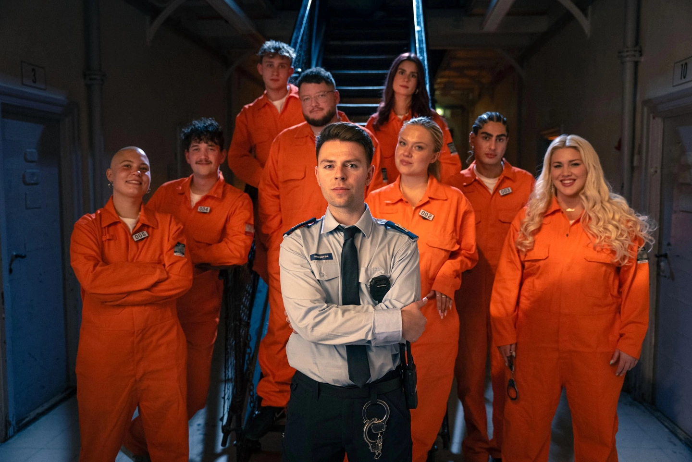
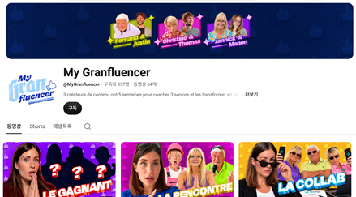
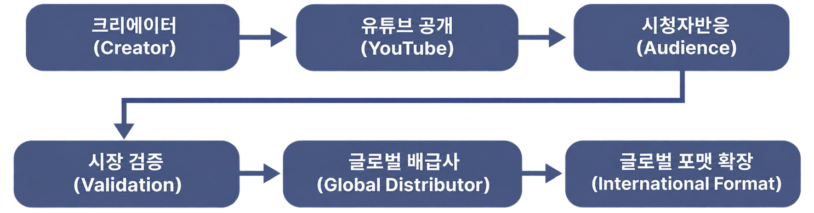
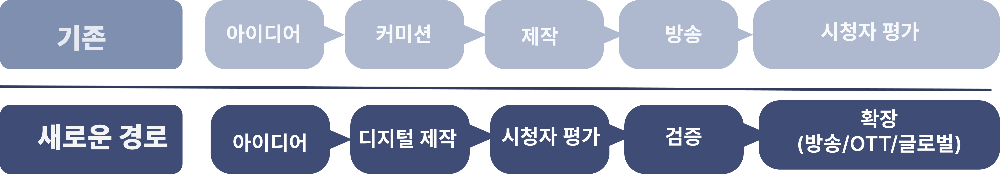
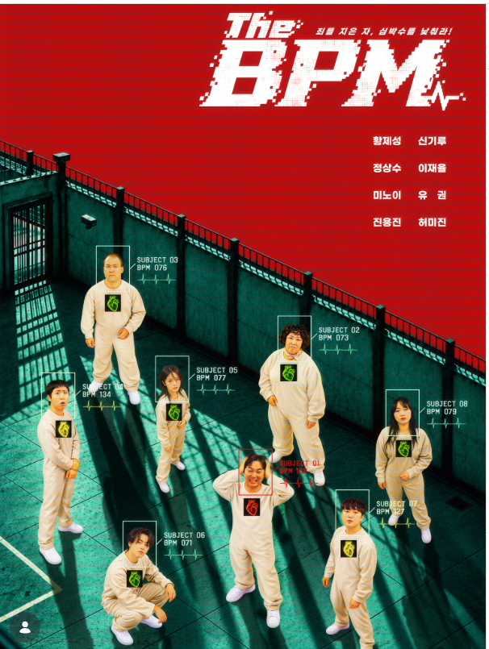

그렇게 날씨가 좋은 칸(Cannes)도 참 오랜만이었다. 토요일 밤 칸에 도착한 뒤 서울로 돌아오는 금요일까지 거의 매일 맑은 하늘이 이어졌다. 해마다 밉컴(MIPCOM)을 찾다 보면 비바람이 몰아치는 칸도 만나고, 갑자기 쌀쌀해진 크루아제트 거리((La Croisette)를 걷기도 하는데 올해는 달랐다. 그리고 날씨만큼이나 선명하게 눈에 들어온 변화가 하나 있었다. 올해 밉컴(MIPCOM)에서 유독 자주 들린 단어는 ‘크리에이터(Creator)’, ‘유튜브(YouTube)’, ‘디지털 퍼스트(Digital-first)’, 그리고 ‘버티컬(Vertical)’이었다.
오랫동안 방송 포맷 산업의 출발점은 콧대 높던 방송사였다. 제작사가 아이디어를 만들고 방송사의 편성이나 투자를 받아 프로그램을 만든 뒤, 방송 결과로 시청자의 평가를 받았다. 심지어 ‘포맷을 판다’는 개념 자체가 국내에서는 낯설었던 시절에는 제작비를 부담했다는 이유만으로 창작자가 만든 아이디어와 프로그램의 IP까지 방송사가 가져가는 일이 당연한 관행처럼 받아들여지곤 했다. 창작자는 프로그램을 만들었지만, 성공 뒤에 만들어지는 더 큰 가치에는 충분히 참여하지 못했다. 솔직히 말하면 이런 관행은 지금도 완전히 사라졌다고 말하기 어렵다.
유튜브와 SNS는 대개 그다음이었다. 화제가 된 장면을 ‘짤’로 만들어 포털과 유튜브, 인스타그램에 뿌리고 본방송으로 시청자를 끌어오는 방식이었다. 방송이 원본이고 디지털은 그 원본의 확장이었던 셈이다.
그런데 돌이켜보면 이것은 방송사들에게 하나의 함정이기도 했다. 나 역시 방송 현장에서 주요 장면을 잘라 포털과 SNS에 끊임없이 올리는 모습을 보며 담당 PD들에게 “우리가 왜 스스로 본방송을 보지 않아도 되는 이유를 만들어 주고 있는가”라고 여러 차례 반대 의견을 냈다. 홍보를 위해 시작했지만, 시청자에게는 굳이 한 시간짜리 프로그램을 기다리지 않고도 가장 재미있는 부분만 골라 보는 방법을 방송사가 스스로 가르쳐준 셈이었다.
그사이 시청자의 생활 방식은 더 빠르게 변했다. 집에 텔레비전이 없는 젊은 세대가 더 이상 특별하지 않고, 정해진 시간에 채널을 맞추는 습관도 약해졌다. 한때 방송가에서 그렇게 외치던 ‘본방 사수’라는 말은 도대체 언제부터 들리지 않게 된 것일까. 이제 시청자는 원하는 시간에, 원하는 플랫폼에서, 원하는 길이만큼 콘텐츠를 골라 본다. 이러한 현실을 보면, 적어도 방송사가 콘텐츠 유통의 유일한 입구였던 시대가 끝나고 있다는 사실은 부정하기 어렵다.
더 역설적인 것은 방송사가 홍보 수단으로 생각했던 디지털 플랫폼이 이제는 방송사보다 먼저 스타와 프로그램, 새로운 포맷 IP를 만들어내고 있다는 점이다. 과거에는 방송에서 성공한 콘텐츠를 유튜브에 잘라 올렸다. 이제는 유튜브와 틱톡(TikTok)에서 성공한 아이디어를 방송사와 글로벌 제작사들이 찾아다닌다. 디지털이 방송의 예고편이던 시대에서, 방송이 디지털 성공작의 다음 시즌이 되는 시대로 관계가 뒤집히고 있는 것이다.
올해 칸에서 본 사례 가운데 가장 작지만 인상적이었던 것 중 하나가 ‘폰 붙이기(Phone Sticking)’ 챌린지였다. 시작은 프로그램이라고 부르기조차 어려운 짧은 틱톡 영상이다. 크리에이터가 휴대전화를 지하철이나 열차 창문 바깥쪽에 붙여 두고, 플랫폼에서 춤을 추거나 포즈를 취하는 자신을 촬영한다. 한 영상이 폭발적인 조회 수를 기록하자 다른 나라의 크리에이터들이 같은 행동을 따라 했고, 장소와 음악, 출연자만 바꾼 변형 영상과 브랜드 협업 콘텐츠까지 등장했다.
이것을 과연 ‘포맷’이라고 부를 수 있을까. 세트도 복잡한 규칙도 포맷 바이블도 없지만 누구나 한 문장으로 이해하고 다른 나라에서 반복할 수 있다. 포맷의 핵심인 ‘반복 가능성’은 이미 갖춘 셈이다. 나는 이런 콘텐츠를 ‘초경량 포맷’이라고 생각한다. 디지털 시대에는 하나의 행동이나 밈이 먼저 세계를 돌고, 비즈니스가 그 뒤를 따라간다. 물론 그만큼 IP 소유권의 경계도 흐려진다.
조금 더 발전한 형태도 있다. 덴마크의 유튜브 크리에이터 모르텐 뮌스테르(Morten Münster)는 실제 감옥을 배경으로 ‘마지막까지 감옥을 떠나지 않는 참가자가 상금을 받는다’는 게임을 만들었다. 공간, 참가자, 탈락 조건, 상금, 최종 승자가 있다. TV 리얼리티 게임쇼의 기본 구조를 이미 갖춘 셈이다.

[그림 1] 유튜브로 공개된 덴마크 리얼리티 시리즈 <FÆNGSLET> 출연자
예전 같으면 제작사가 이런 아이디어를 방송사에 가져가 파일럿 제작비부터 설득했을 것이다. 이제 유튜브 크리에이터는 자신의 채널과 팬덤을 이용해 직접 파일럿을 만들고, 방송사 회의실이 아니라 실제 시청자에게 먼저 보여준다. 유튜브 크리에이터가 출연자를 넘어 포맷 개발자가 되고 있는 것이다.
전문 제작사가 처음부터 디지털을 선택하기도 한다. 벨기에의 <마이 그랜플루언서(My Granfluencer)>는 크리에이터들이 시니어 참가자를 실제 소셜미디어 인플루언서로 성장시키는 경쟁 포맷이다. TV 성공작을 유튜브용으로 줄인 것이 아니라 처음부터 디지털 시청 환경을 전제로 만들었다. 디지털은 더 이상 방송의 부산물이 아니라 하나의 포맷이 처음 태어나는 장소가 되고 있다.

[그림 2] <마이 그랜플루언서(My Granfluencer)> 유튜브 화면 캡처 이미지
(출처: https://www.youtube.com/@MyGranfluencer)
프랑스의 유튜브 크리에이터 스퀴지(Squeezie)와 감독 테오도르 보네(Théodore Bonnet)가 만든 <스톱 더 트레인(Stop The Train)>은 이 변화가 어디까지 갈 수 있는지를 보여준다. 실제로 움직이는 열차를 거대한 게임 세트로 만들고 참가자들이 객차마다 미션을 수행하는 대형 어드벤처 게임쇼다. 그러나 가장 중요한 특징은 출발점이 유튜브였다는 사실이다.
2025년 유튜브에서 먼저 공개돼 시청자를 확보하며 가능성을 증명했고, 2026년 바니제이 엔터테인먼트(Banijay Entertainment)가 글로벌 포맷 권리를 확보했다. 흐름은 이렇다.

[그림 3] 디지털 퍼스트 포맷 확장의 흐름
(출처: 저자 구성)
과거에는 제작사가 방송사와 투자자를 설득하고 제작비를 확보한 다음에야 시청자가 프로그램을 볼 수 있었다. 여기서는 반대다. 시청자가 먼저 프로그램을 보고 가능성을 판단했고, 그 뒤에 글로벌 포맷 회사가 들어왔다.
독일의 <세븐 vs. 와일드(7 vs. Wild)>는 유튜브에서 시작해 글로벌 OTT 아마존 프라임 비디오(Amazon Prime Video)로 확장됐고, 네덜란드의 <렛츠 플레이 볼(Let’s Play Ball)>은 유튜브 파일럿이 120만 회 이상 조회된 뒤 민영방송국 SBS6의 프라임타임으로 이동했다. 핵심은 방송사의 판단보다 시청자의 판단이 먼저 있었다는 점이다.

[그림 4] 포맷 검증 방식의 변화
(출처: 저자 구성)
플랫폼 하나가 추가된 것이 아니다. 콘텐츠 산업이 아이디어를 검증하는 순서 자체가 바뀌고 있는 것이다.
이번 글을 준비하면서 영국의 방송 포맷 리서치·컨설팅사 K7 미디어(K7 Media)의 트랑 응우옌(Trang Nguyen)에게 이 변화에 대한 의견을 물었다. 그녀 역시 유튜브를 비롯한 디지털 플랫폼이 새로운 엔터테인먼트 아이디어의 ‘발판(launchpad)’이 되는 현상이 늘고 있다고 봤다. 특히 전통적인 방송사의 커미셔닝 과정이나 긴 제작 일정을 거치지 않고 실제 시청자의 관심을 실시간으로 확인할 수 있다는 점을 강조했다. 대규모 제작비를 투입하기 전에 실제 관객에게 아이디어를 시험할 수 있다는 것은 지금처럼 커미션이 어려운 환경에서 큰 장점이다.
그러나 그녀는 이 모델이 기존 방송 포맷의 흐름을 완전히 대체한다고 보지는 않았다. 오히려 ‘점점 더 중요해지는 병행 경로(parallel route)’라는 표현이 정확하다고 했다. TV가 사라지고 유튜브가 그 자리를 차지한다는 이야기가 아니라, 포맷이 세상에 나오는 길이 하나 더 생긴 것이다.
빠른 검증에는 위험도 따른다. 공개하는 순간 경쟁자에게 아이디어를 보여주고, 첫 영상의 낮은 조회 수 때문에 가능성 있는 포맷이 너무 일찍 실패작으로 판단될 수도 있다. 따라서 디지털 퍼스트 전략은 단순히 ‘유튜브에 먼저 올려보자’가 아니다. 공개 범위와 IP 보호, 성공의 기준, 이후 확장 전략까지 처음부터 함께 설계해야 한다.
이 변화는 크리에이터 몇 명의 실험에서 끝나지 않는다. 폭스 엔터테인먼트(Fox Entertainment)는 버티컬 비디오(세로형 영상) 기업 홀리워터(HOLYWATER)에 투자했고, 2026년 밉컴에서는 케빈 하트(Kevin Hart)의 미디어 기업 하트비트(Hartbeat)와 함께 마이크로드라마에서 검증한 캐릭터와 스토리를 향후 TV 시리즈나 영화로 발전시키는 전략도 공개했다. 먼저 짧게 만들고, 실제 관객에게 보여주고, 반응을 확인한 뒤 성공한 IP에 더 큰 제작비를 투입하는 방식이다.
이것은 콘텐츠 산업의 R&D 방식이 바뀌고 있음을 뜻한다. 과거에는 큰돈을 들여 만든 뒤 성공 여부를 확인했다면, 이제는 작게 만들어 먼저 증명하고 증명된 것에 더 크게 투자할 수 있다. 말하자면 ‘제작 후 검증’에서 ‘검증 후 확장’으로의 변화다.
필자가 운영하는 디턴(dI turn) 역시 이런 방식에 관심을 가지고 여러 실험을 하고 있다. <디 아이월(The I-Wall)>은 처음부터 디지털 환경에서 작동할 수 있는 요리 엔터테인먼트로 구상했다. 참가자가 게임을 통해 재료를 획득하고 제한된 선택 안에서 최종 요리를 만드는 구조다. 디지털 콘텐츠에서 출발한 이 아이디어는 이후 해외 제작 파트너와 함께 국제 시장을 위한 스튜디오 포맷으로 발전하고 있다.
최근 촬영한 <The BPM>은 또 다른 실험이다. 참가자는 긴장과 흥분을 유발하는 미션을 수행하면서 자신의 심박수, 즉 BPM을 통제해야 한다. 참가자가 아무렇지 않은 표정을 지어도 심장은 거짓말을 하지 못한다. 우리는 처음부터 대규모 시리즈로 만들지 않고 먼저 촬영해 실제 심박수의 변화가 게임의 긴장감을 만드는지, 숫자의 움직임이 화면에서 재미로 전달되는지를 확인했다.

[그림 5] 유튜브 예능 채널 [스튜디오 디턴]의 <The BPM> 포스터
(출처: 디턴 제공)
결국 하나의 질문으로 돌아간다. 과거 포맷 제작자의 가장 중요한 질문이 “어느 방송사가 이 프로그램을 편성할 것인가?”였다면, 앞으로는 그보다 앞선 질문이 필요하다.
“이 아이디어가 실제로 작동한다는 것을 우리는 어떻게 먼저 증명할 것인가?”
유튜브, 틱톡, 버티컬 플랫폼은 그 질문에 답할 새로운 실험실이다. 조회 수, 시청 지속시간, 댓글, 공유, 팬덤은 아이디어의 시장성을 확인하는 초기 데이터가 된다. 성공만큼 실패도 빨라진다. 그러나 작게 실패하고 빨리 수정해 다시 실험할 수 있다는 것은 거대한 제작비를 한 번에 걸고 결과를 기다리는 것보다 유연한 개발 방식일 수 있다.
유튜브는 방송의 적도 아니고, 더 이상 방송의 홍보 창구만도 아니다. 새로운 IP가 태어나고 시험받으며 다음 시장으로 이동하는 하나의 출발점이다. 결국 가장 중요한 것은 플랫폼이 아니다. 어디에서 처음 공개됐든 반복 제작할 수 있고, 다른 나라에서 현지화할 수 있으며, 다른 길이와 다른 플랫폼으로 확장될 수 있다면 그 아이디어에는 IP의 가치가 생긴다.
앞으로 포맷 제작자는 방송 프로그램 하나를 만드는 사람을 넘어, 작은 아이디어가 디지털에서 태어나 방송과 OTT, 세계 시장까지 성장할 수 있도록 IP의 성장 경로를 설계하는 사람이 되어야 한다. 방송이 먼저이고 디지털이 뒤따르던 시대에서, 이제는 디지털이 먼저 질문하고 방송이 그 답을 확장하는 시대가 시작되고 있다.